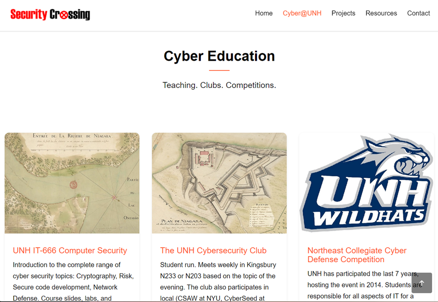

a/Soft Development
Award winning nu/TPU

Founded with Jim and Beth in '89. Brought the fully programmable Digital VAX editor to the PC and over 30 Unix systems. Won Digital Review's Best Software award in '90.
entegrity solutions
PUblic Key Infrastructure (PKI)
Entegrity solutions was an early PKI company based in San Jose. I joined in ‘98 after receiving my CISSP certification in ‘97. As part of professional services, I built solutions for the Federal Reserve, Hong Kong Post Office, DoD, Healthcare and more. I also led FIPS certifications for root certificate devices..
Sanctum
Web Application Security
I joined ‘02. Sanctum developed the first web application firewall (WAF). I was tasked with attacking (scanning and scaring) potential clients In order to sell AppShield It was a it was a fun time scanning 300+ sites with some great war stories. I also helped build (http://altoromutual.com) a fake bank site that is still helping train defenders 20 years later.
watchfire
Acquired Sanctum '04
Watchwire was based in Ottawa and focused on website automation testing. They sold AppShield to F5 networks as part of the Sanctum acquisition. My role shifted from running attacks to training others on how to use testing tools to prevent attacks.
intel
Web, XML, and security
In ‘05 Intel saw an opportunity in the convergence of WWW, XML, and security being placed on hardware. Back to once again working remotely to San Jose doing IEFT & W4C standards work and some wild XML processing innovation.
Liberty Mutual
protecting you from change
Great company, great people, the environment was a little hard on an innovator. But another company that shows making quality software is how to build secure software.

When the Internet bubble burst on Entegrity in ‘01 I created this site primarily to drive my consulting work. Over the years it morphed into supporting focusing on my teaching and running cyber events with the cybersecurity club at UNH.
We did some fun events, but a UNH Cyber Center never got off the ground.
{kind=link}
{kind=link}
{kind=link}
{kind=link}
{kind=link}